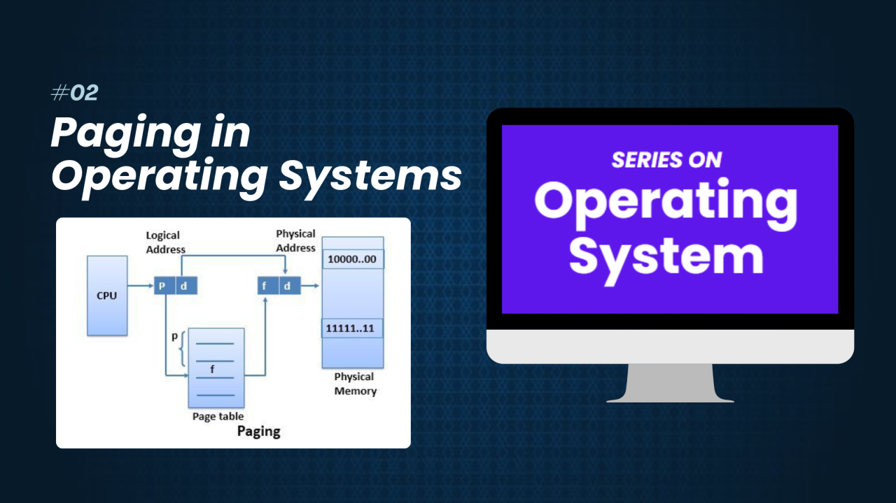
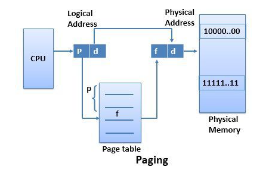
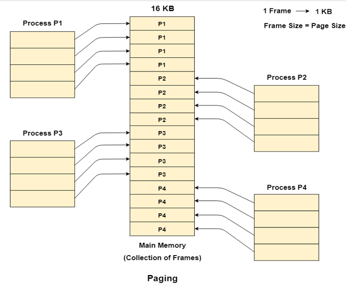

Paging in Operating Systems
Ashmita Pandey · · Operating Systems

Hi everyone, I'm Ashmita 👋
Understanding how memory is managed is key to building reliable and efficient systems. One of the core concepts in memory management is Paging, a method that simplifies memory allocation and solves fragmentation problems.
In this article, let’s explore Paging in Operating Systems with real-world examples, detailed explanations, and how it plays a vital role in memory management.
What is Paging?
Paging is a memory management technique in which a program is broken down into fixed-size blocks called pages, while the main memory (RAM) is divided into blocks of the same size called frames. When a program runs, its pages can be loaded into any free memory frames.
This technique ensures efficient memory use and helps avoid problems like external fragmentation. The operating system maintains a page table to map each logical page to a physical memory frame.
The Memory Management Unit (MMU) uses the page table to translate logical addresses (used by the program) into physical addresses (used by hardware).

Why is Paging Important?
- Memory is not always available as a large continuous block. Paging allows programs to use non-contiguous memory spaces.
- It supports virtual memory, where programs can use more memory than physically available.
- Programs can grow and shrink without needing to be moved in memory.
Real-world Example: Think of a large textbook that cannot be printed in one go. Instead, it is printed in small sections (pages) and later assembled. Similarly, a process is broken into pages, which are loaded into any free spots (frames) in memory.
Key Terminologies
- Logical Address Space: Range of addresses generated by a process.
- Physical Address Space: Actual addresses in the physical memory (RAM).
- Page: A fixed-size block in the logical address space.
- Frame: A fixed-size block in the physical memory.
- Page Table: Maps each page to a corresponding frame.
How Paging Works
Step 1: Divide Memory
- Logical memory is divided into pages.
- Physical memory is divided into frames.
Step 2: Allocate Pages
- Pages of the program are loaded into any available frames.
Step 3: Maintain Page Table
- This maps each page number to a frame number.
Step 4: Address Translation
- CPU generates a logical address.
- MMU uses the page table to convert it to a physical address.
Step 5: Handle Page Fault
- If a required page is not in memory, it is fetched from disk.
Step 6: Program Execution
- CPU continuously uses the page table during execution.
Example Calculation
Assume:
- Logical Address = 13 bits → Logical Address Space = 8K words
- Physical Address = 12 bits → Physical Address Space = 4K words
- Page size = Frame size = 1K words
Then:
- Number of pages = 8K / 1K = 8 → requires 3 bits for page number
- Number of frames = 4K / 1K = 4 → requires 2 bits for frame number
Logical Address = Page Number + Page Offset Physical Address = Frame Number + Frame Offset
Formula: Physical Address = (Frame Number shifted left by offset bits) + Offset

Real-World Example: Using Apps on Your Phone
Imagine you are using several apps on your phone at once. Each app is a process with many pages. The phone only keeps the necessary pages of each app in RAM. When you switch to an app you haven't used in a while, some pages may need to be reloaded from storage. This is paging in action.
Hardware Support: Translation Lookaside Buffer (TLB)
To make address translation faster, systems use a Translation Lookaside Buffer (TLB). It is a small, fast memory that stores recent page table entries.
- On a TLB hit, translation is fast.
- On a TLB miss, the system falls back to the page table in main memory.
Advantages of Paging
- No External Fragmentation: Memory can be used more flexibly.
- Efficient Allocation: Uses scattered memory blocks effectively.
- Supports Virtual Memory: Lets programs use more memory than RAM.
- Faster Swapping: Only small pages are moved, not entire processes.
- Improved Security: Isolates process memory.
Disadvantages of Paging
- Internal Fragmentation: Unused space in the last page.
- Overhead: Needs memory for page tables.
- Slower Access: Extra step for address translation.
- Page Faults: Can slow down execution.
- Complex Hardware: Needs MMU and page replacement logic.
Conclusion
Paging is a core concept in memory management that enables efficient, secure, and flexible use of RAM. By dividing memory into pages and mapping them to frames, it allows systems to manage memory better and run larger programs.
Understanding how paging works, its benefits and drawbacks, and seeing it in real-world scenarios like smartphones and multitasking systems helps clarify why this concept is so essential in system design and OS development.
Thanks for reading!